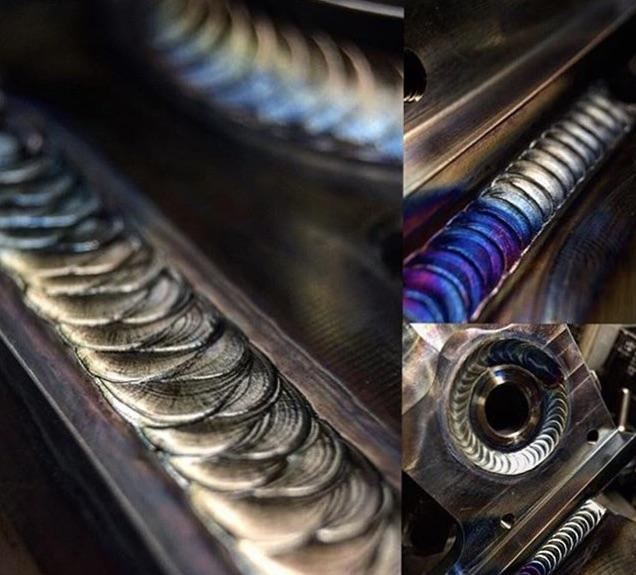
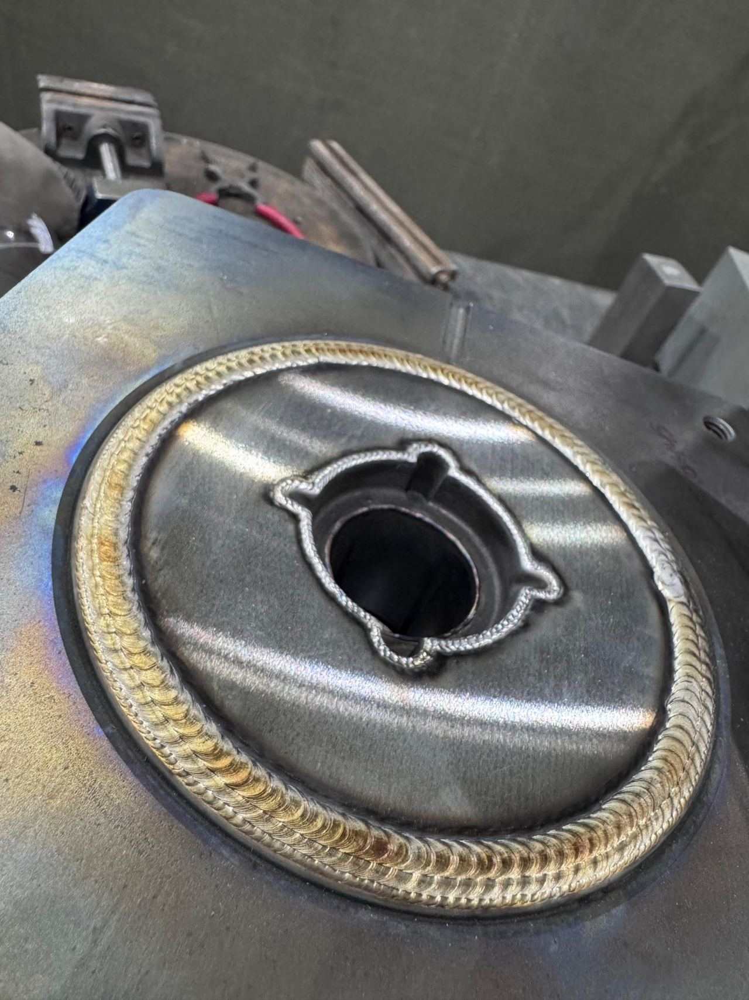

Precision TIG repair for molds, dies and tool steel
Worn edges, cracked faces and broken features built back up under the microscope, ready for your machinist. One certified welder, 25 years at the bench, in Fort Wayne.
General notes
What comes through the door, and how it leaves. If your part isn't listed, send a photo anyway.
- Certification
- AWS D17.1 aerospace fusion welding
- Certification
- AWS D1.6 structural welding, stainless

Not sure it can be saved? Email a photo or call 260-515-3263.
Tool steel build-up for mold and die repair
Edges, faces, channels, bores, cores and inserts, built up in multiple passes and left proud so your machinist has stock to cut back to size.
Micro-TIG under a stereo microscope
Fine edges and small features welded under magnification, for repairs where a little too much heat or filler ruins the part.
Stainless, aluminum and exotic alloys
Flanges, shafts, tubes, collars, vessels and fabricated boxes, TIG welded clean.
Shaft, gear and journal repair
Gears welded to shafts, new bearing journals put back on rollers.
Short production runs and fixtures
Brackets and tube mounts run on the positioner, and heavy MIG-welded fixture plates.
Rush work when a tool is down
Fast turnaround when a mold or line is waiting. Call first so the bench is clear when the part arrives.
Detail views
Real parts from this bench, photographed as they came off it. Tap any view to enlarge.

Bore, welded all around Insert ring, welded all aroundOne welder, start to finish
Fort Wayne Specialty Welding is a one-person shop with 25 years of welding behind it. The person who answers the phone is the person who welds your part, so you can talk the repair through with whoever is holding the torch.
- Hours
- 7 am to 5 pm. Weekends available.
- Drop-off
- Fort Wayne, IN. Call to arrange.
- On-site
- Fort Wayne and the surrounding area.
- Certified
- AWS D17.1 and AWS D1.6
Send the print. Or just a photo.
Email your drawings or a few clear photos of the part. Say what it's made of if you know, what it needs to end up as, and when you need it back.
Email: sales@fwspecialtyweld.com
| Rev | Description |
|---|---|
| A | Send drawings or photos By email, or call and talk it through. |
| B | Get a quote The repair, the material and your deadline get talked through before any work starts. |
| C | Drop it off or book on-site Drop-off in Fort Wayne by arrangement, or on-site work in the surrounding area. |
| D | Pick it up Welded and ready for machining or back into service. |